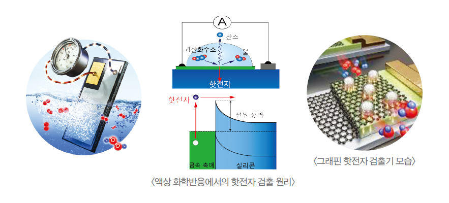

Report by Subjects
Report by Subjects
KAIST RESEARCH ACHIEVEMENTS
Hot Electron Detection under Catalytic Reactions
EEWS Graduate School Jeong Young Park
Summary
The quantitative description of electronic excitations in surface chemical reactions using catalytic devices has the potential to lead to a better understanding of the electronic effect in various catalytic systems. This understanding, in turn, is expected to serve as an important academic foundation for the development of a more thorough mechanistic understanding of chemical and physical phenomena occurring on catalyst surfaces. It could also lead to the creation of advanced heterogeneous catalysts with remarkably enhanced catalytic performance, consequently resulting in the development of renewable energy and chemical feedstocks, which is a central issue worldwide.
R&D Report
Direct detection of hot electrons generated on metal catalysts during surface reactions is challenging because of their quick thermalization. To overcome this technical limitation, we have developed a novel catalytic nanodiode consisting of a thin metal catalyst deposited onto a semiconductor support, and successfully achieved the realtime detection of hot electrons created in the course of catalytic reactions occurring at atmospheric pressure or in liquid phase. One of the promising solutions to today’s energy problem is the development of advanced catalytic materials capable of initiating chemical reactions at low temperatures and reagent pressures at industrial scales. Improved catalysts promise significant fuel savings in the production of chemicals as well as increased efficiency of renewable energy sources. This, in turn, requires a detailed study of the surface processes responsible for catalytic transformations at the atomic level, which is challenging since the lifetime of many reaction intermediates is on the order of 10 fs (1fs = 10-15s).
Research Results
Hot electrons are electrons that carry an amount of energy far in excess of the energy they carry when in their equilibrium state. Such electrons are generated is the course of catalytic reactions involving exothermic transformations. Because of their great excess energy, hot electrons move very fast, delivering information about the chemical reaction at a femtosecond-scale resolution. It was demonstrated that a catalytic nanodiode can efficiently capture hot electrons created during nonadiabatic dissipation of chemical energy released during chemical reactions. The detected signal, called chemicurrent, fully reflects the kinetics of the catalytic reaction with a sensitivity reaching 10-6 electrons per elementary reaction step. To address this, we developed a novel graphene-based catalytic nanodiode composed of Pt nanoparticles and a single layer of graphene, which shows promise as a catalytic support due to its unique electronic, thermal, and chemical properties. By measuring the current during hydrogen oxidation at different temperatures and partial pressure of hydrogen, we not only quantitatively examined the correlation between turnover frequency and the hot electrons generated on the Pt nanoparticles but also probed the kinetics of the surface reactions, which are governed by the Langmuir- Hinshelwood mechanism. Furthermore, since all processes associated with hot electrons occur inside the catalytic nanodiodes, they can be used to study reactions in progress at liquid/solid interfaces. This fact was successfully demonstrated for the case of catalytic decomposition of hydrogen peroxide on the surface of various metal thin-film catalysts supported on a silicon substrate. Due to the high density of hot electron generation in the liquid reagent, a record-high yield of 10-1 electrons per elementary reaction step was demonstrated. This finding may not only lead to a better fundamental understanding of the mechanism of catalytic reactions, but also provide a chance to develop next-generation catalysts with remarkably enhanced catalytic performance.
 Figure 1. Detection of hot electrons during hydrogen peroxide decomposition at liquid/solid interface
Research Funding
This research was supported by the Institute for Basic Science (IBS).
Research Outcomes
“Graphene-Semiconductor Catalytic Nanodiodes for Quantitative Detection of Hot Electrons Induced by a Chemical Reaction,” Nano Letters, 16, 1650 (2016).
“Hot Electrons at Solid-Liquid Interfaces: A Large Chemoelectric Effect during the Catalytic Decomposition of Hydrogen Peroxide, Angewandte Chemie, International Edition, 55, 10859 (2016) (selected as front cover).